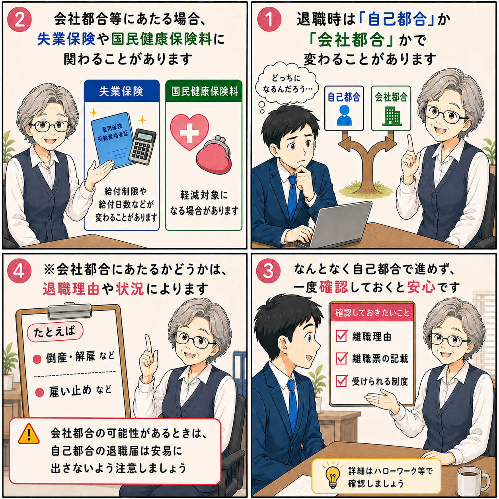

自己都合退職と会社都合退職の違い｜失業保険・国民健康保険料・退職届の注意点
退職するときは、自己都合か会社都合かで、退職後の扱いが変わることがあります。 特に、失業保険や国民健康保険料、そして退職届の書き方は見落としやすいポイントです。

自己都合と会社都合で変わること
退職理由が会社都合等にあたる場合、自己都合で退職したときと比べて、制度面で違いが出ることがあります。
- 失業保険：給付制限や給付日数などが変わることがあります。
- 国民健康保険料：軽減対象になる場合があります。
- 離職票の記載：退職理由の記載内容は後の手続きにも関わります。
なんとなく自己都合で進めず、離職理由・離職票の記載・受けられる制度は一度確認しておくと安心です。
詳細はハローワーク等で確認しましょう。
会社都合にあたるかどうかは、退職理由や状況によります
「会社都合のほうが有利そうだからそうしたい」と考えるのではなく、 実際の退職理由や状況に照らしてどう扱われるかを確認することが大切です。
たとえば、確認対象になりやすい例
- 倒産・解雇など
- 雇い止めなど
実際にどの区分になるかは個別事情で変わるため、迷う場合はハローワーク等で確認してください。
会社都合の可能性があるときの退職届の注意点
会社都合の可能性があるときは、自己都合の退職届は安易に出さないよう注意しましょう。
退職届は、自分から退職する意思を明確に示す書類です。 そのため、会社から退職を求められている場面で、内容をよく確認しないまま 「一身上の都合」による退職届を提出してしまうと、後から説明が食い違う原因になることがあります。
退職届は自身が退職を意思表示するときに出すものです。会社の求めで退職するときに出すものではありません。 どうしても出す時は、「一身上の都合」ではなく、「退職勧奨に伴い」に変更したうえで提出しましょう。
退職届を出す前に確認すること
退職届を出す前に、自分から退職を申し出たのか、会社側から退職を求められたのかを整理しておきましょう。 自分から退職したいと伝えた事実がない場合、会社側から退職を求められている可能性があります。
ただし、実際の扱いは状況によって変わります。 たとえば、会社都合退職として経歴に残したくないため、本人が自己都合として処理してほしいと希望するケースもあります。 そのため、会社都合か自己都合かは、退職前のやり取りや本人の希望も含めて整理する必要があります。
- 自分から退職したいと伝えたのか
- 会社から退職を求められたのか
- 退職届や離職票にどう記載される予定か
- 自己都合として処理してよい事情があるのか
会社都合の可能性があるときは、自己都合の退職届を安易に出さないでください。 退職届を出す前に、退職理由と書類の記載内容を確認しましょう。